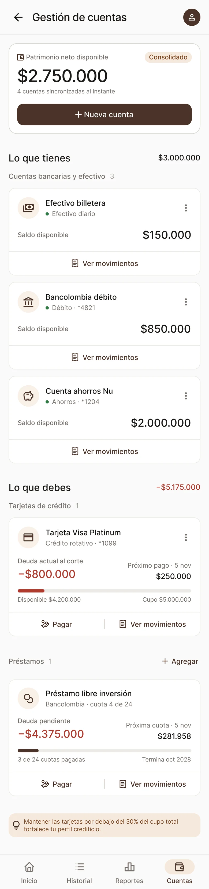
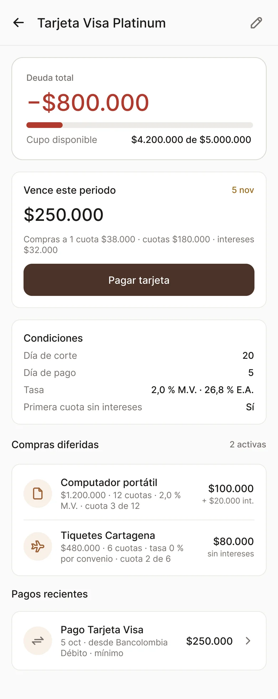
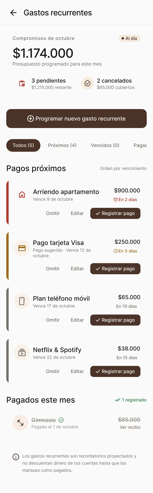
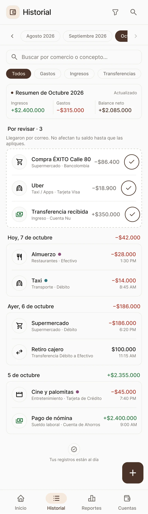
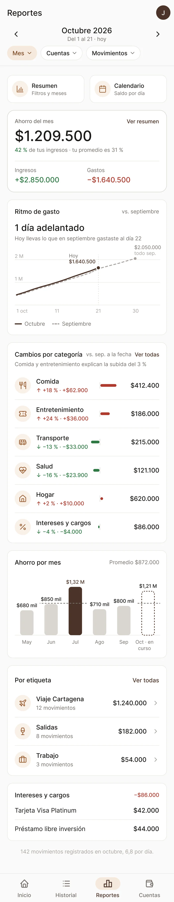
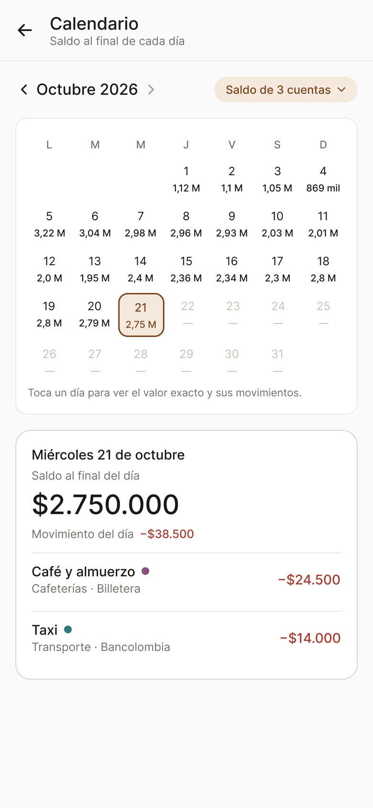

para Android
Va aparte de la oficial y puede tener errores. Úsala solo si estás probando la app.
Lo que tienes y lo que debes
Tus cuentas, tarjetas de crédito y préstamos quedan juntos, con el patrimonio neto arriba. Una deuda siempre se ve en rojo y en negativo, nunca como saldo a favor.
- Lo que tienes
- $3.000.000
- Lo que debes
- −$5.175.000
Cifras de la pantalla de ejemplo.



Pagos que no se te pasan
Programa el arriendo, la tarjeta o tus suscripciones una vez. Coffer te muestra cuánto falta para cada uno, el color sube de gris a ocre cuando se acerca y a rojo si se vence, y lo registras con un toque.
- Arriendo apartamentoEn 2 días$900.000
- Pago tarjeta VisaEn 5 días$250.000
- Netflix & SpotifyEn 15 días$38.000
Cada movimiento, en orden
Lo que llega por correo espera en «Por revisar» y no toca tu saldo hasta que lo apruebas. Los reportes comparan tu ritmo de gasto con el mes anterior y te dicen qué categoría subió.
-

Historial. Filtra por gastos, ingresos o transferencias y busca por comercio. -

Reportes. Ahorro del mes, ritmo de gasto y cambios por categoría. -

Calendario. Tu saldo al final de cada día y lo que pasó en él.
Un zorro que reacciona a tu mes
En Inicio, el zorro de Coffer cambia según cómo van tus finanzas y te dice lo importante en una línea. Elige un mes y míralo.
¡Vas muy bien!
Llevas 8,4 % más que en septiembre. Sigue así.
Cómo instalar la APK
- Descarga el archivo desde tu teléfono. Abre esta página en Android y toca «Descargar APK».
- Ábrelo cuando termine. Si Android lo pide, permite instalar apps de esa fuente en Ajustes › Instalar apps desconocidas.
- Toca «Instalar» y abre Coffer. La primera vez, el zorro te da la bienvenida.
¿Cuál descargo?
La oficial, si vas a usar Coffer para tus finanzas. La de pruebas, solo si te pidieron probar algo nuevo antes de que salga.
Descargar APK oficial Ver todas las versiones